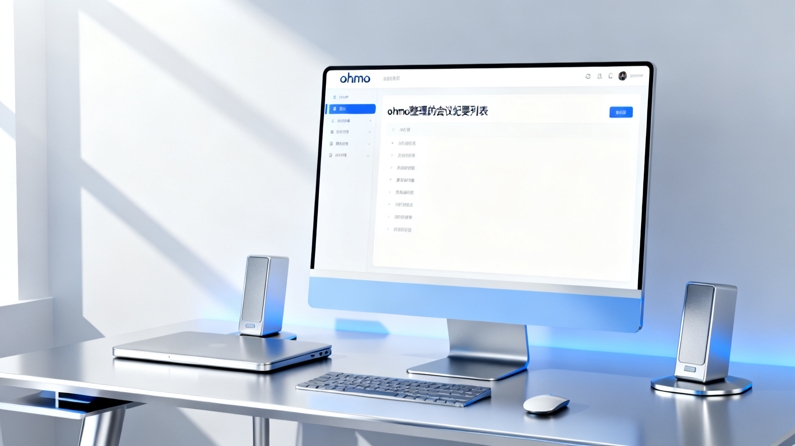
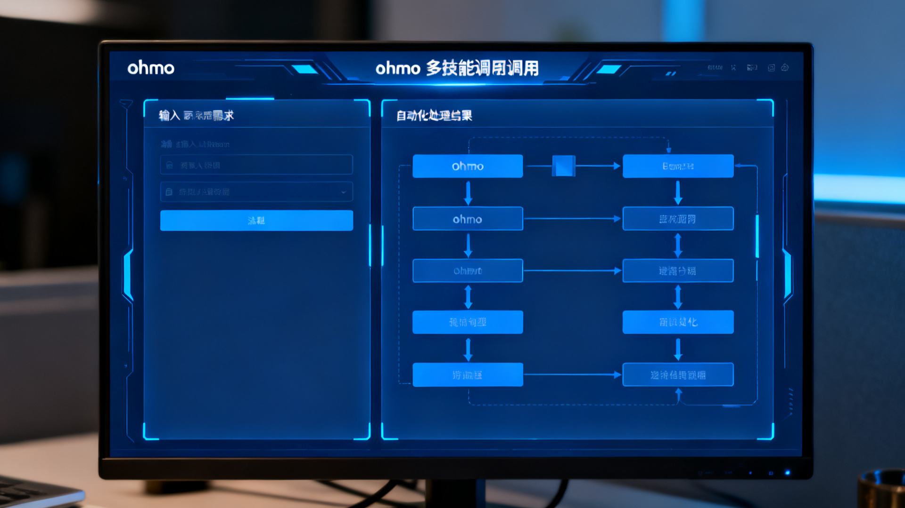
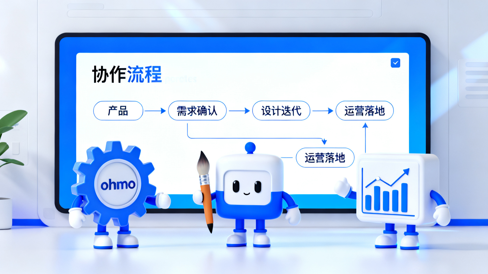
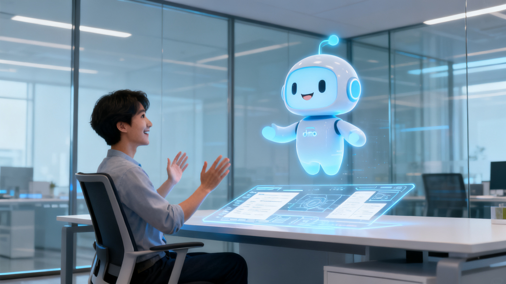

小林是产品经理，最近公司要上线一个新功能。她一边对接开发进度，一边还要频繁和设计、运营沟通，邮件、表格、会议纪要堆成山。更头疼的是，这些信息分散在不同平台，想要“复盘”一个细节，常常要花半小时去翻聊天记录和文档。
如果你也和小林一样，总觉得手里的 AI 工具“智能”却不够“实际”，那你一定要了解一下 OpenHarness ，以及它背后的 ohmo 个人 AI 助理。
过去我们用的 AI 助手，往往只会“答问题”或者写段文案，缺少真正的记忆能力和上下文理解。 OpenHarness 的 ohmo 有何不同？
ohmo 不仅能记住你给过的每一份需求、讨论要点，还能在需要时自动检索和汇总。比如小林只需一句“帮我整理上周产品例会的所有需求变更”， ohmo 就能自动定位相关聊天、邮件、文档，生成一份结构化清单。

这正是 OpenHarness 项目“记忆与技能管理”能力的体现——不只是“记住”对话，更能灵活调用工具，自动处理复杂任务。你的 AI 助理，终于变得“像人一样靠谱”。
实际工作中，很多任务不是单一问答能解决的。比如：
ohmo 的另一个强大之处，是支持“工具调用”和“技能管理”。简单说，你可以为它配置 Excel 处理、文档生成、邮件发送等各类技能，像给自己配了一个“数字工具箱”。
小林只需要说：“把本地表格同步到企业微信，并邮件通知团队。”ohmo 可以自动串联技能，帮她一步到位完成。

这意味着， ohmo 不只是会聊天，它是一个能“干活”的数字员工，帮你完成从信息收集到流程执行的闭环。
很多时候，项目涉及多个人、多个环节。 OpenHarness 独特的“多智能体协作”能力，让你的 ohmo 不仅能独当一面，还能与其他 AI 协作解决更复杂的场景。
例如，产品、设计、运营各有一个 ohmo 个人助理。它们可以自动共享关键信息、分工协作，甚至在发现冲突或遗漏时，主动提醒相关人员。你的团队，就像多了几个“数字专员”，大幅提升沟通和执行效率。

想象一下，团队成员再也不用反复抄送邮件、找不到负责人， AI 助理自动为大家“打配合”，省时又省心。
AI 助理最难的，不是“聪明”，而是真正能为你解决实际问题。 OpenHarness 和 ohmo 的出现，让 AI 不再只是聊天工具，而是可以长期服务、不断进化的数字搭档。你需要的不是一个“会聊天的机器人”，而是一个真正“有用”的 AI 同事。

本文由 AI 辅助创作，作者进行了实测验证和编辑修改。